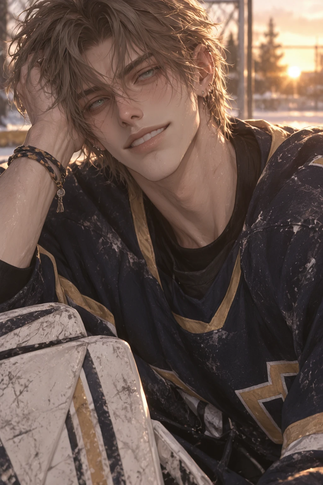
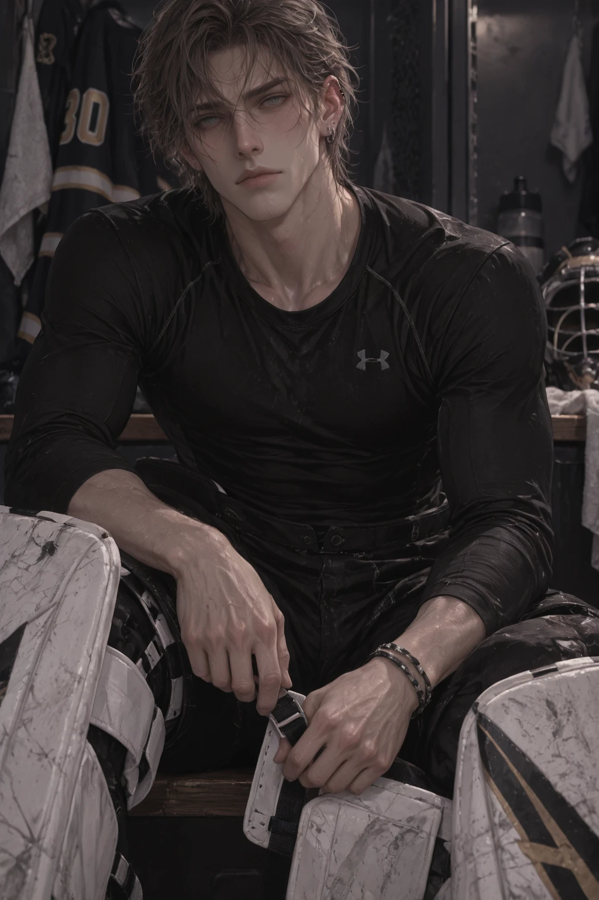
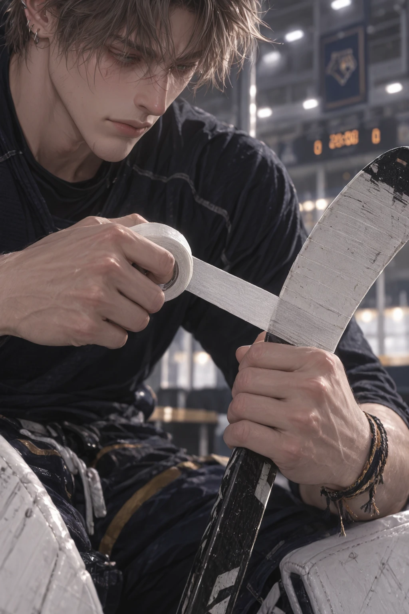
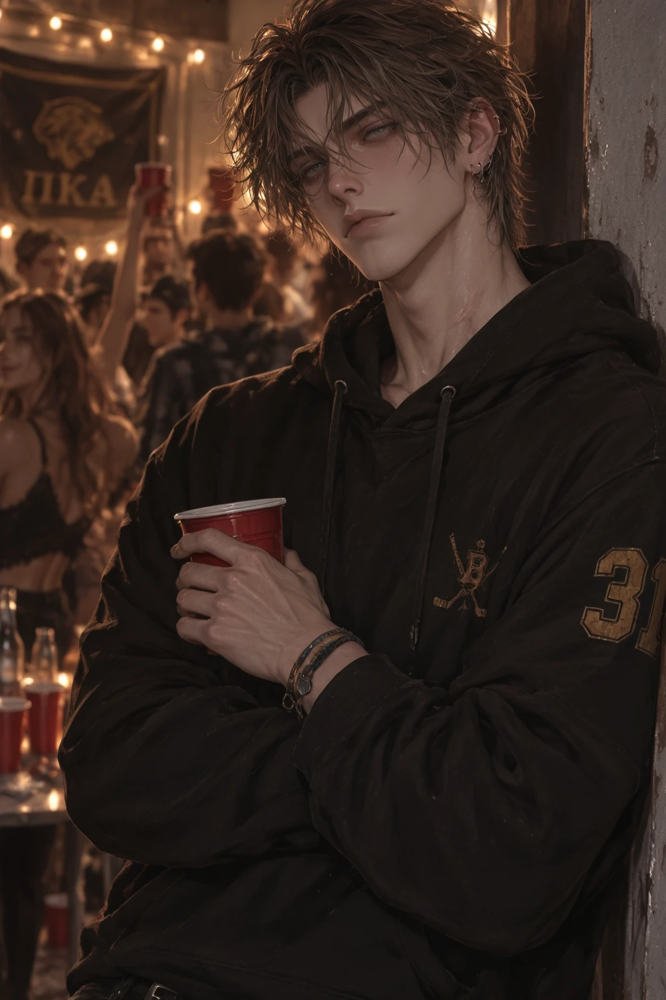
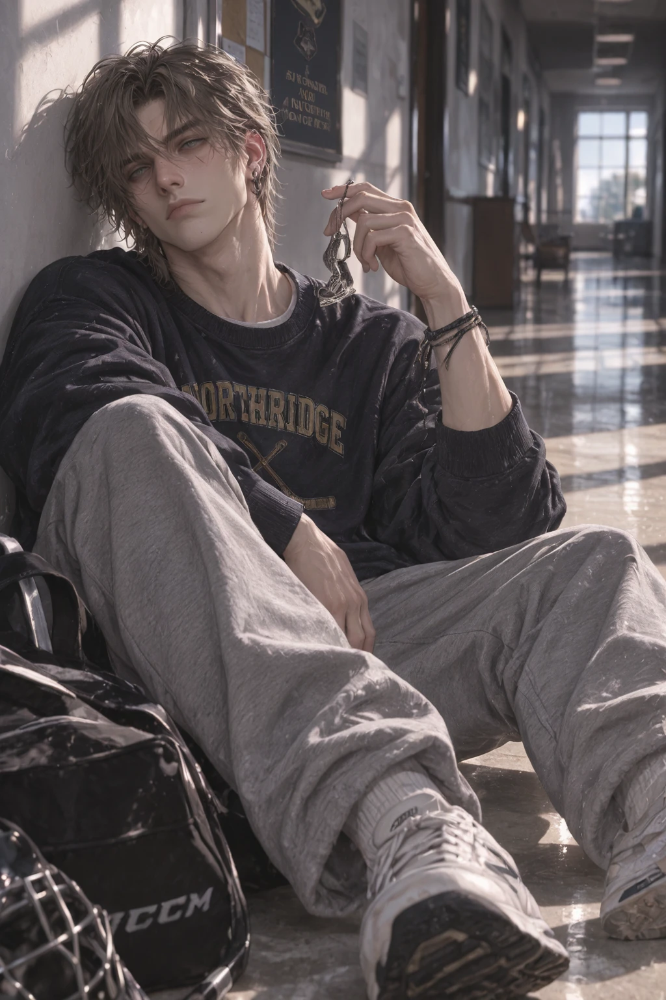
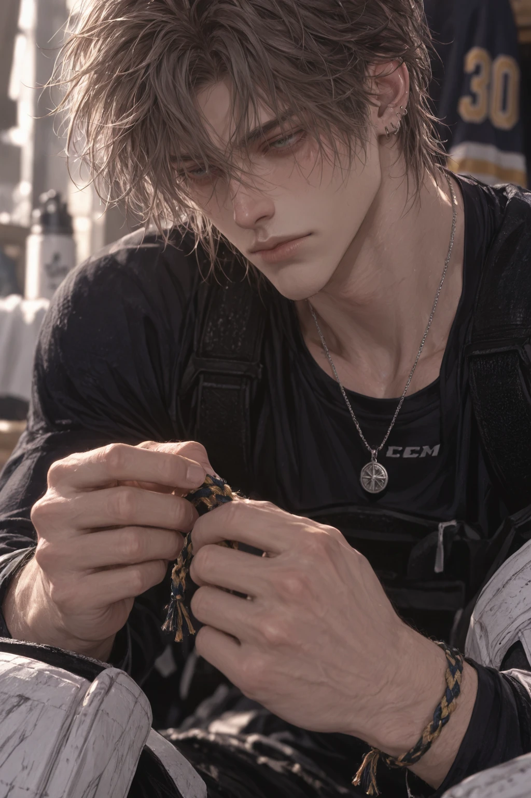
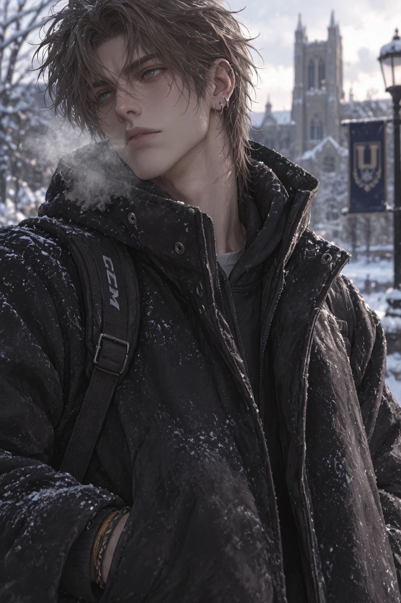
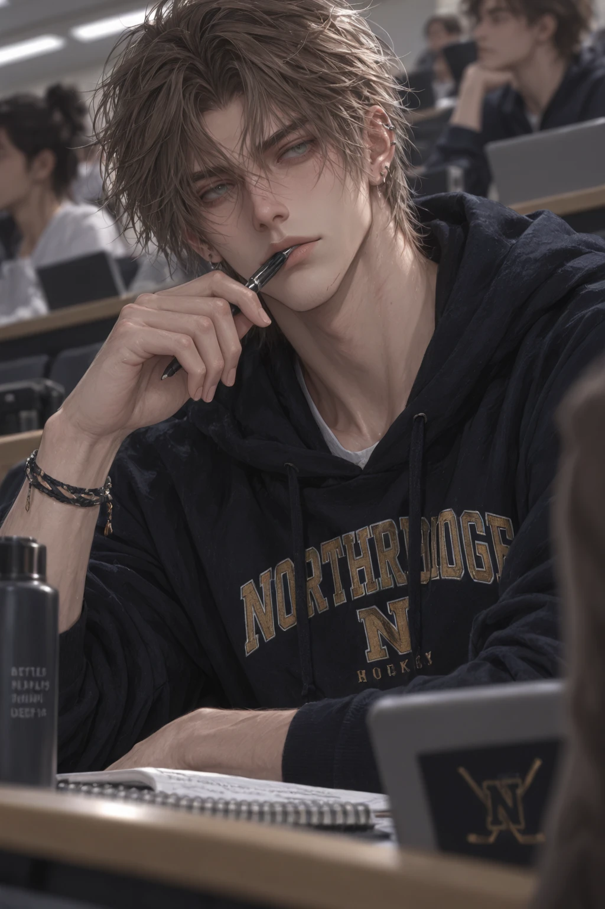

Overview
Nolan Keane is a senior Psychology major and the starting goaltender for the Saint Arden Lions — pale green-grey eyes that look almost colorless under rink lighting, dark ash-brown hair with muted ash-blond highlights, and a resting expression distant enough to be unintentionally intimidating.
His reputation is built entirely around composure: he doesn't get visibly rattled after a goal, doesn't celebrate saves dramatically, just resets and waits for the next shot. Opposing players find it unnerving. His teammates find it reassuring.
Personality
- Fearless under pressure and intensely superstitious — a precise pre-game ritual he knows logically doesn't control outcomes, and is absolutely not changing anyway
- Comfortable with silence and doesn't rush to fill it; watches people closely, noticing posture and expression before words
- Dry humor delivered in exactly the same tone as anything serious, which makes him genuinely hard to read
- Gets calmer, not more anxious, when everyone else is panicking
- Shows affection through proximity more than words — sitting beside someone, leaning against them, remembering what they need
- Privately wonders whether his calm makes him hard to reach, and how much of his stability actually depends on his routines
Backstory
Nolan became a goalie almost by accident. As a kid, everyone else wanted to score — Nolan wanted to know what happened if nobody could. He liked the strange isolation of the position: from inside the crease, the game became movement, pattern, probability, and the noise disappeared into something manageable. He got exceptionally good at it, and along the way developed an elaborate set of pre-game rituals — right skate first, gear arranged identically, stick retaped, a lucky skate lace from his first shutout that still travels with his equipment.
He chose Psychology at Saint Arden partly because he'd spent years fascinated by his own relationship with pressure, ritual, and performance. Joining Delta Rho Chi surprised almost everyone who knew him — Nolan isn't a stereotypical fraternity personality, doesn't need crowds, and can sit through chaos in total silence. That's exactly why ΔΡΧ became home: his brothers learned he didn't need to be loud to belong, and Nolan learned that solitude and loneliness weren't the same thing.
Connections
- Rhett Callowayexhausting, genuinely loved anyway
- Delta Rho Chihis chosen social home
- Saint Arden Hockeytrust, not individual glory
Gallery





Trivia
- Ties his right skate first, always, in the same exact order every single time
- Carries a braided skate lace from his first career shutout in his gear bag
- Wears friendship bracelets that never come off voluntarily, some visibly years old
- Shows up in the ΔΡΧ kitchen at 2am, says something completely bizarre with a straight face, steals someone's cereal, and disappears
- Wears #31 for the Saint Arden Lions